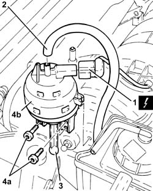
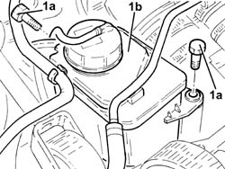
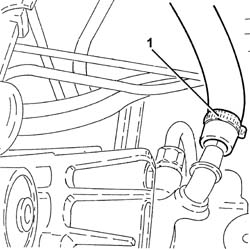
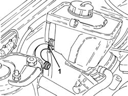
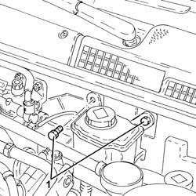
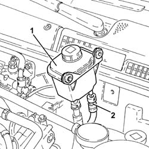
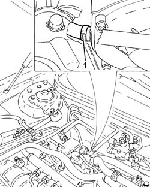
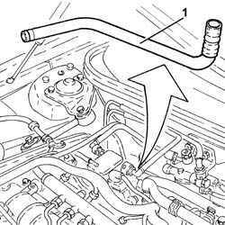

4130B34 SUPPLY PIPE FROM FLUID RESEVIOR TO POWER STEERING PUMP R R
- Path
- Procedures > 41 STEERING UNIT > 4130 POWER STEERING > 4130B POWER STEERING HYDRAULIC SYTEM > 4130B34 SUPPLY PIPE FROM FLUID RESEVIOR TO POWER STEERING PUMP R R
- Kind
- repair procedure (removal / refitting; the operation number is the code)
- Applies to
- engines: 1.8 T.SPARK, 2.0 JTS, 1.9 JTD 16V; all production periods
- Interactive page
- https://sloeber94.github.io/elrnDB-aGt/en/#/125001412
Applies to: engines: 1.8 T.SPARK, 2.0 JTS; all production periods
 Removing
Removing
 Refitting
RefittingEnsure that the ignition key is in the OFF position, then disconnect the negative battery terminal (-).
Name | Connector | |
|---|---|---|
- | Battery |
Proceed with removal
Op. 1016A40 IGNITION COIL COVER ON CYLINDER HEAD- R+R
1. Disconnect the electrical connection from the enablement solenoid of the changeover device actuator.
2. Disconnect the vacuum intake pipe from the air flow switching device actuator and release it from the fastening.
Name | Connector | |
|---|---|---|
1 | Variable geometry control solenoid |
3. Disconnect the linkage from the air flow switching cotrol actuator.
4. Undo the bolts (4a) and remove the air flow switching control actuator (4b).

Applies to: engines: 1.8 T.SPARK, 2.0 JTS; all production periods
Release the fuel vapour recovery pipe and the coolant return pipe to the engine coolant supply reservoir from the fastenings on the power assisted steering fluid reservoir.
Drain the power steering fluid from the reservoir using a suitable syringe.
1. Undo the bolts (1a) and move the power assisted steering fluid reservoir (1b) aside.

Applies to: engines: 1.8 T.SPARK, 2.0 JTS; all production periods
1. Loosen the band and disconnect the supply pipe from the fluid reservoir to the power assisted steering pump, power assisted steering pump side.

Applies to: engines: 1.8 T.SPARK, 2.0 JTS; all production periods
1. Loosen the band, disconnect the supply pipe from the power assisted steering fluid reservoir to the pump, reservoir side, and remove it.

Applies to: engines: 1.8 T.SPARK, 2.0 JTS; all production periods
Refitting
RemovingConnect the supply pipe from the fluid reservoir to the power assisted steering pump, reservoir side and tighten the band.
Connect the supply pipe from the fluid reservoir to the power assisted steering pump, pump side and tighten the band.
Refit in its seating the power steering fluid reservoir and secure it with its bolts.
Fasten the fuel vapour recovery pipe and the coolant return pipe to the engine coolant supply reservoir to the fastenings on the power assisted steering fluid reservoir.
Fit the air flow switching device actuator in its seating and secure it using the bolts.
Connect the linkage to the air flow switching control actuator.
Connect the air flow switching control actuator vacuum intake pipe and secure it to the fastening.
Connect the electrical connection from the enablement solenoid of the changeover device actuator.
Proceed with refitting
Op. 1016A40 IGNITION COIL COVER ON CYLINDER HEAD- R+R.
Connect the negative (-) battery terminal
Top up the power assisted circuit with the recommended fluid.
 | Type | Component | Name | Qty. |
|---|---|---|---|---|
- | Fluid | POWER ASSISTED STEERING CIRCUIT | TUTELA GI/A | - |
Bleed the power steering system as described below
With the front wheels raised off the ground, with the engine switched off turn the steering wheel to full lock, left and right, 4-5 times.
Check and, if necessary, top up the fluid level in the reservoir.
Position the vehicle on the ground and start up the engine.
Carry out 4 - 5 complete steering wheel rotation cycles (right and left).
Top up the fluid level in the reservoir.
Applies to: engines: 1.9 JTD 16V; all production periods
Removing
RefittingPosition the vehicle on the ramp
Proceed with removal
- 1016A10 sound-proofing cover - r + r
Proceed with removal
Remove the power steering fluid reservoir cap and drain the fluid using a suitable syringe.
Op. 7055B54 UNDER-ENGINE GUARD - R R
Refit the brake fluid reservoir cap.
1. Undo the bolts securing the power steering fluid reservoir.

Applies to: engines: 1.9 JTD 16V; all production periods
1. Move the power assisted steering fluid reservoir away, placing it as illustrated in the diagram.
2. Disconnect the rapid connector for the supply pipe from the fluid reservoir to the power assisted steering pump, reservoir side.

Applies to: engines: 1.9 JTD 16V; all production periods
1. Loosen the band and disconnect the supply pipe from the fluid reservoir to the power assisted steering pump, power assisted steering pump side.

Applies to: engines: 1.9 JTD 16V; all production periods
1. Remove the supply pipe from the fluid reservoir to the power assisted steering pump.

Applies to: engines: 1.9 JTD 16V; all production periods
Refitting
RemovingRefit the feed pipe from fluid reservoir to power steering pump in its housing.
Connect the supply pipe from the fluid reservoir to the power assisted steering pump, pump side and secure it using the band.
Connect the rapid connector for the supply pipe from the power steering fluid reservoir to the pump, reservoir side.
Refit in its seating the power steering fluid reservoir and secure it with its bolts.
Proceed with refitting
Op. 0010T71 POWER STEERING FLUID CHECK LEVEL AND TOP UP IF NECESSARY.
Proceed with refitting
Op. 7055B54 UNDER-ENGINE GUARD - R R.
Proceed with refitting
- 1016A10 sound-proofing cover - r + r
.
Remove the car from the ramps.